의공기사 (2019-09-21 기출문제)
1과목: 기초의학 및 의공학
1. 대뇌피질의 시각영역이 속하는 부위는?
- 전두엽
- 측두엽
- 두정엽
- 후두엽
(정답률: 79%)

2. 다음 중에서 전해질 겔(Electrolyte gel)이 필요하지 않은 전극은?
- Ag-AgCl 전극
- 부유 전극(floating electrode)
- 경피적 바늘 전극(needle electrode)
- 금속판 전극(metal-plate electrode)
(정답률: 75%)
3. 심장의 벽은 3층 구조로 되어 있으며, 외곽에서부터 차례로 바르게 나열한 것은?
- 심외막-심근-심내막
- 심내막-심근-심외막
- 심외막-심내막-심근
- 심내막-심외막-심근
(정답률: 86%)
4. 반투막을 사이에 두고 용질이 농도가 낮은 쪽에서 용질의 농도가 높은 쪽으로 용매가 이동하는 현상은?
- 확산(Diffusion)
- 삼투(Osmosis)
- 여과(Filtration)
- 경쟁(Competition)
(정답률: 86%)
5. 다음 중 인체 근육의 주요 기능이 아닌 것은?
- 움직임 및 자세 유지
- 전해질 조절
- 심장박동
- 열 생산
(정답률: 83%)
6. 안정상태의 심실근육세포의 세포막 전위차인 안정막전위의 범위는 얼마인가?
- -120 ~ -100mV
- -90 ~ -70mV
- 70 ~ 90mV
- 100 ~ 120mV
(정답률: 85%)
7. 변위를 측정하는 센서가 아닌 것은?
- 압전 센서
- 용량성 센서
- 표면 플라즈몬 공명 센서
- 선형가변차동변환기(LVDT)
(정답률: 69%)
8. 전극과 전해질간의 경계면에서 전류가 흐를 때, 반전지 전위의 변화가 일어나게 되는데, 전류가 흐르지 않을 때의 반전위 전위와 전류가 흐를 때 변화한 반전지 전위의 차이를 무엇이라고 하는가?
- 과전위(overpotential)
- 오프셋전위(offset potential)
- 변위전류(displacement current)
- 반전지 전위(half-cell potential)
(정답률: 58%)
9. 평행판 모양의 용량성 센서에서 정전 용량을 변화시킬 수 있는 방법이 아닌 것은?
- 판의 유효 넓이
- 판 사이의 간격
- 유전체
- 전하량
(정답률: 71%)
10. 다음 의료생체센서 장치 중 측정되는 것이 다른 하나는?
- 뇌압계
- 근변위계
- 휴대용 혈압계
- 관혈식 혈압계
(정답률: 79%)
11. 이식형 생체 전극의 특징으로 틀린 것은?
- 인체에 삽입되는 전극이다.
- 장기간 측정용으로 사용 가능하다.
- 전극의 신호는 무선방식으로만 전달된다.
- 인체 내부 장기의 전위 측정이나 전기 자극을 목적으로 한다.
(정답률: 82%)
12. 생체신호 중 센서에서 측정방식이 빛이 아닌 것은?
- 혈류
- 맥파
- 안구전위
- 혈액성분
(정답률: 66%)
13. 자기장의 변화를 감지하는 유도성 센서의 관계식에 표현되지 않는 것은?
- 부피
- 투자율
- 기하학적 위치
- 코일의 감은 수
(정답률: 64%)
14. 센서의 측정 중 참 값과 측정된 값과의 차이를 참 값으로 나눈 값을 무엇이라 하는가?
- 안정도
- 분해능
- 정확도
- 재현성
(정답률: 86%)
15. 다음 중 분극 전극이 아닌 것은?
- 일회용 Ag-AgCl 전극
- 스테인리스 재질의 바늘형 전극
- 인체 내부에 이식하는 백금 전극
- 겔을 사용하지 않은 건성 전극(dry electrode)
(정답률: 73%)
16. 신경전달물질의 양을 조절하는 기전이 아닌 것은?
- 연접전신경세포 축삭에서 합성된다.
- 연접전신경세포 축삭으로 재흡수된다.
- 분해효소에 의해 신경전달물질이 파괴된다.
- 연접후신경세포 막으로 확산되어 소멸한다.
(정답률: 60%)
17. 다음 중 금속저항 온도계의 특징이 아닌 것은?
- 주로 귀금속이 유용하다.
- 회로에 큰 전류를 흘려야 한다.
- 전기회로는 브리지 회로가 바람직히다.
- 보통 선이나 호일 또는 금속판의 형태로 제작된다.
(정답률: 75%)
18. 생체전기 신호측정에서 전극에 대한 설명으로 틀린 것은?
- 전해질은 이온을 포함한 용액이고, 이온의 이동에 의해 전류가 생성된다.
- 평형상태에서의 전위는 전극반응에 관여하는 물질의 농도와 온도에 무관하다.
- 전극은 전극표면에서의 화학반응에 의하여 일정한 전위를 가지는 평형상태를 유지하고 있다.
- 이온에 의한 전류를 전자의 이동에 의한 전류로 변환하는 기능을 갖는 것을 전극이라 한다.
(정답률: 82%)
19. 신경 세포에 대한 설명으로 옳은 것은?
- 신경 세포의 중심부분은 수상돌기이다.
- 하나의 신경세포는 3개 이상의 축삭을 가지고 있다.
- 축삭을 싸고 있는 절연체 물질은 미토콘드리아이다.
- 축삭의 길이는 경우에 따라서 1m 이상이 되는 것도 있다.
(정답률: 77%)
20. 흡착 전극(suction electrode)에 대한 설명으로 틀린 것은?
- 탈부착 작업이 쉽다.
- 피부 표면에 부착하는 전극이다.
- 동잡음(motion artifact)이 비교적 크다.
- 인체내부의 장기에 부착해서 측정한다.
(정답률: 87%)
2과목: 의용전자공학
21. 선형가변차동변환기(LVDT) 센서의 생체 변위 측정의 원리는?
- 저항(resistance)의 변화
- 인덕턴스(inductance)의 변화
- 커패시턴스(capacitance)의 변화
- 표면전위(surface potential)의 변화
(정답률: 69%)
22. 심음도의 특징으로 틀린 것은?
- 객관적으로 정밀하게 분석가능하다.
- 정상청진한계의 저주파음(3, 4음)을 정확하게 기록한다.
- 심음도와 청진 소견을 비교하여 청진 소견이 향상된다.
- 혈액의 순환 기능 진단에는 사용하지 못한다.
(정답률: 72%)
23. RLC 직렬회로에서 R = 4Ω, XL = 8Ω, XC = 5Ω 이고, 사인파 교류전압 100V를 인가했을 때, 회로에 흐르는 전류(A)는?
- 5
- 10
- 15
- 20
(정답률: 69%)
24. 불 대수식
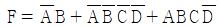
을 간략화 한 것은?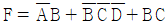
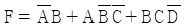
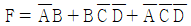
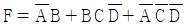
(정답률: 52%)
25. 200Hz의 주파수를 갖는 아날로그 신호의 주기는?
- 1 ms
- 5 ms
- 10 ms
- 50 ms
(정답률: 72%)
26. JK 플립플롭 2개의 입력이 똑같이 '1'이고, 클록 펄스가 계속 들어오면 출력은 어떤 상태가 되는가?
- set
- reset
- toggle
- 동작불능
(정답률: 75%)
27. 심전도 기록지 속도가 40mm/s일 때 평균 R-R 간격이 20mm일 경우의 분당 심박수는 몇 회인가?
- 100
- 120
- 150
- 200
(정답률: 83%)
28. 그림에서 4개의 커패시터 C1, C2, C3, C4가 직병렬로 연결되어 있을 때, 합성 정전용량은 약 몇 ㎌인가? (단, C1 = 1㎌, C2 = 2㎌, C3 = 3㎌, C4 = 4㎌ 이다.)
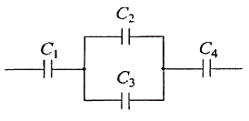
- 0.7
- 5
- 5.8
- 10
(정답률: 61%)
29. 펄스의 진폭과 폭은 일정하고 펄스의 반복주파수를 신호에 따라서 변화시키는 변조는?
- 펄스 주파수 변조(PFM)
- 펄스 진폭 변조(PAM)
- 펄스 폭 변조(PWM)
- 펄스 수 변조(PNM)
(정답률: 84%)
30. PN 접합 다이오드에서 공핍층이 가장 넓어질 때는?
- 순방향의 전압이 인가될 때
- 공핍층에 빛을 조사할 때
- 역방향 전압이 인가될 때
- 전압을 인가하지 않을 때
(정답률: 77%)
31. 마이크로프로세서의 중앙처리장치(CPU)의 성능을 평가하는 척도로 틀린 것은?
- 입출력 장치
- 메모리 크기
- 워드의 길이
- 명령어 처리 속도
(정답률: 68%)
32. 폐용적의 측정방법으로 틀린 것은?
- He dilution technique
- N2 washout technique
- Paramagnetic O2 analysis
- Whole body plethysmography
(정답률: 59%)
33. 다음 회로에서 다이오드 역할의 설명 중 옳은 것은?
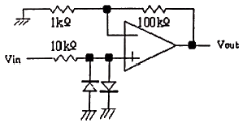
- 입력신호를 정류하여 직류 검출을 한다.
- 입력신호의 진폭을 제한하여 연산증폭기 입력을 보호한다.
- 입력신호의 첨두값을 검출하여 직류를 복원한다.
- 입력단자의 바이어스 전류를 제한한다.
(정답률: 61%)
34. 투자율이 μ(H/m)이고 단면적은 S(m2)인 환상의 철심에 권수 N회로 솔레노이드를 감아서 전류 I(A)를 흘릴 경우, 평균 자로 길이는 ℓ(m)이라고 하면 철심을 흐르는 자속(Wb)은?
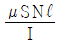
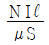
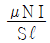
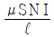
(정답률: 62%)
35. 라디오 같은 동조회로의 특수 분야에 사용되며 출력신호에 포함된 고조파를 제거하기 위해 동조 증폭기에 한정적으로 사용하는 증폭기는?
- A급 증폭기
- B급 증폭기
- C급 증폭기
- D급 증폭기
(정답률: 68%)
36. 두 가지 금속으로 폐회로를 형성하고 전류를 흘리면 접속점에 줄(Joule)열 이외의 발열 또는 흡열이 일어나는 현상은?
- 톰슨 효과
- 제벡 효과
- 펠티어 효과
- 표피 효과
(정답률: 63%)
37. 트랜지스터 증폭 회로 중에서 입력저항이 높아서 주로 임피던스 변환용으로 사용되는 회로는?
- B급 증폭기
- 공통 베이스(CB) 증폭기
- 이미터 폴로어(emitter follower)
- 전압 폴로어(voltage follower)
(정답률: 62%)
38. 배전압 정류회로의 특징에 대한 설명 중 틀린 것은?
- 주로 고전압용이다.
- 큰 전류 출력이 어렵다.
- 승압변압기가 필요하다.
- 용량이 큰 커패시터를 사용하면 성능이 좋다.
(정답률: 59%)
39. 아날로그-디지털(ADC) 신호 변환 과정에 속하지 않는 것은?
- 양자화(quantization)
- 부호화(coding)
- 표본화(sampling)
- 확산화(diffusing)
(정답률: 76%)
40. 압전 재료 중에서 가장 큰 압전효과를 가지며 우수한 진동 특성을 가지는 것은?
- 수정
- 로셀염
- 전기석
- 티탄산바륨
(정답률: 58%)
3과목: 의료안전·법규 및 정보
41. 다음 중 의료가스의 종류가 아닌 것은?
- 질소
- 헬륨
- 산소
- 일산화탄소
(정답률: 82%)
42. 전자의무기록(EMR)의 개념으로 틀린 것은?
- 병원 업무에 관계된 행정 자료의 보관소
- 역학연구 및 임상연구 수행의 핵심적 기반
- 환자의 임상진료에 관한 모든 정보의 보관소
- 임상의사의 기억을 보조하기 위한 정보저장소
(정답률: 61%)
43. 감지 전류에 대한 설명으로 옳은 것은?
- 전류값은 약 100mA 이다.
- 개인이 감지할 수 있는 최소의 전류이다.
- 인체에 인가되는 전류가 증가되었을 때 자발적으로 손을 뗄 수 있는 상태를 유지할 수 있는 최대 전류값으로 약 10mA 이다.
- 인체통과 전류가 100mA 에 달하고 경과 시간이 길어지면 심장이 경련을 일으켜 심장이 멎는 전류값을 말한다.
(정답률: 70%)
44. 휴대용 의료용전기기기의 기계적 안전을 위한 낙하시험에서 기기의 중량별 낙하높이로 틀린 것은?
- 7kg - 5cm
- 30kg - 4cm
- 45kg - 3cm
- 70kg – 2cm
(정답률: 70%)
45. 향후 PACS의 발전방향과 거리가 먼 것은?
- 병원정보시스템과 분리
- 3차원 영상 기술의 활용
- 컴퓨터 보조 진단에 응용
- 영상의학의 연구 및 교육 정보 제공
(정답률: 80%)
46. 다음 중 등전위 접지에 대한 설명으로 틀린 것은?
- 인체를 약 1kΩ의 저항을 가지는 등가회로로 가정하여 의료기기의 허용전위차를 계산할 수 있다.
- 둘 이상의 전기기기를 동시에 사용할 때 각 전기기기들의 전위차를 없애는 접지를 의미한다.
- 환자를 중심으로 한 반경 2.5m 이내의 공간에는 모든 장치는 완전한 등전위로 있어야 한다.
- 매크로 쇼크에 대한 방지대책으로 의료기기를 접지하는 방식이다.
(정답률: 53%)
47. 의료기기의 용기나 외장에 필이 기재해야하는 것은?
- 사용방법
- 사용시 주의사항
- “의료기기”라는 표시
- 보수점검에 관한 사항
(정답률: 75%)
48. 레이저와 인체 조직 간에 발생하는 상호작용의 유형이 아닌 것은?
- 광분해
- 온열 효과
- 제백 효과
- 광화학 효과
(정답률: 69%)
49. 의료기기의 습열 멸균 공정에 대한 성과 적격성 검증 기준으로 틀린 것은?
- 유지시간 전체에 걸쳐 온도 및 압력이 일정하게 유지되거나 사전에 결정된 프로필을 따라야 한다.
- 수증기가 멸균 온도 대역 내의 온도 및 수증기 압력에 상응하는 온도에 해당되어야 한다.
- 유지시간 전체에 걸쳐 측정된 온도는 멸균 온도 +10K를 상한선으로 하여 소정의 멸균온도 대역 내에 해당되어야 한다.
- 평형시간은 800L 미만의 멸균기 챔버의 경우에 15초를, 이보다 큰 멸균기 챔버의 경우에 30초를 각기 초과해서는 안 된다.
(정답률: 64%)
50. 다음 중 의료기기감시원의 자격이 있는 자는?
- 의료기기 협회 회원
- 3년 이상 경험이 있는 의료기기 수리업자
- 5년 이상 경험이 있는 의료기기 판매업자
- 1년 이상 보건의료행정에 관한 업무에 종사한 경험이 있는 소속 공무원
(정답률: 76%)
51. 컴퓨터에서 사용하는 정보 양의 단위인 1메가바이트(MB)는 다음 중 어느 것과 동일한가?
- 100 바이트
- 1024 바이트
- 1048576 바이트
- 1000000 바이트
(정답률: 74%)
52. 의료기기의 과온 및 기타 위해요인에 대한 보호에서 초과하는 온도에 도달하지 않아야 하는 최대 허용온도가 틀린 것은?
- A종 절연재료 : 1⑤℃
- E종 절연재료 : 100℃
- F종 절연재료 : 155℃
- B종 절연재료 : 130℃
(정답률: 67%)
53. 의료용기기의 전기충격 보호정도에 따른 분류에 속하지 않는 것은?
- B형
- C형
- BF형
- CF형
(정답률: 64%)
54. 심장 정지를 일으킬 수 있는 심실 세동의 전류값은?
- 1 μA
- 10 μA
- 10 mA
- 100 mA
(정답률: 66%)
55. 의료기기법에서 정한 의료기기위원회의 역할(조사·심의)이 아닌 것은?
- 의료기기의 허가에 관한 사항
- 의료기기의 지정에 관한 사항
- 의료기기의 등급분류에 관한 사항
- 의료기기의 기준규격에 관한 사항
(정답률: 63%)
56. 이미 허가를 받은 의료기기와 구조·원리·성능·사용목적 및 사용방법 등이 본질적으로 동등한 의료기기의 경우에는 제출하지 않아도 되는 것은?
- 사용목적에 관한 자료
- 작용원리에 관한 자료
- 이미 허가받은 제품과 비교한 자료
- 기원 또는 발견 및 개발경위에 관한 자료
(정답률: 60%)
57. 원격의료의 장점으로서 거리가 먼 것은?
- 지역불균형 해소
- 지속적인 진료 가능
- 의사의 진료영역 확대
- 환자데이터의 보안강화
(정답률: 80%)
58. 보건복지부장관이 임명 또는 위촉하는 의료기기 위원회의 위원으로 구성될 수 있는 자격에 해당되지 않는 사람은?
- 의료기기 관련 단체에서 추천한 자
- 의료기기 관련 업무를 담당하는 5급 공무원
- 의료기기에 관한 학식과 경험이 풍부한 자
- 시민단체(비영리 민간단체 지우너법 제 2조의 규정에 의한 비영리민간단체)에서 추천한 자
(정답률: 62%)
59. 레이저와 조직 간에 발생하는 상호작용 중 함유된 에너지가 일반적으로 약 1~2mJ로 적은 양이지만 몇 나노 초(ns)동안 GW(giga watt)의 파워에 도달하는 높은 강도의 펄스를 이용하여 대상 조직을 이온화하는 것은?
- 확산효과
- 온열효과
- 광분해효과
- 광화학효과
(정답률: 70%)
60. 의학용어의 분류체계에서 '의학논문 주제어 분류체계'는 무엇인가?
- ICD
- SNOMED
- MeSH
- UMLS
(정답률: 60%)
4과목: 의료기기
61. 전기 자극 치료기에 있어 여러 가지 전기가 사용된다. 다음 중 직류전기와 같은 것으로 건전지나 축전지 등을 이용하여 일정한 전압을 유지하면서 전기를 일정한 방향으로 흘리는 것은?
- 감응전기
- 교류전기
- 평류전기
- 자극전기
(정답률: 74%)
62. 체열진단기의 특성으로 틀린 것은?
- 초퍼회로나 셔터장치가 필요하다.
- 전극 간 임피던스가 낮아 잡음에 매우 강하다.
- 센서가 감응하는 적외선 파장대의 광학필터가 필요하다.
- 주변 환경의 온도 변화로부터 보호하기 위한 온도보상장치와 항온, 항습장치가 필요하다.
(정답률: 67%)
63. 전류 강도에 의해 전기 치료기를 분류할 수 있는데 이 중 저전류 치료기기에 해당되는 전기 강도는?
- 0.1 ~ 1 mA
- 1 ~ 30 mA
- 100 ~ 500 mA
- 500 ~ 2000 mA
(정답률: 66%)
64. 제세동기에서 이중파형을 사용하는 가장 큰 이유로 옳은 것은?
- 소요비용을 절감
- 심근손상을 최소화
- 제세동에 걸리는 시간 절감
- 체중이 많은 사람에게 효과적
(정답률: 74%)
65. 심근의 활동에 의해 발생되는 수 mV의 전위차를 피부표면 혹은 체내의 측정점에서 검출하는 측정법은?
- EEG
- ECG
- EMG
- ENG
(정답률: 77%)
66. 청력진단에서 유아나 지체부자유자와 같이 의사표시에 어려움이 있는 피검자를 대상으로 청각자극 인지 여부를 판별할 때 사용하기에 적당한 생체전기신호 그래프는?
- EOG
- EEG
- ECG
- EMG
(정답률: 68%)
67. X-선 진단장치의 특징이 아닌 것은?
- 진단영역에서 사용하는 저에너지 X-선에서는 컴퓨터 산란, 간섭성 산란, 광전효과가 대부분이다.
- X-선이 인체를 투과할 때 조직에 따라 흡수나 산란이 다르기 때문에 X-선 영상의 명암 차가 생긴다.
- 단단한 조직에서 유발하는 병변의 검출보다 뇌, 근육과 같은 연부조직에서의 병변 검출 정확도가 훨씬 높다.
- 기존의 필름이나 스크린 시스템이 아닌 모니터에 영상으로 표시할 수 있는 디지털 영상도 가능하다.
(정답률: 75%)
68. 양성자 방출 단층 촬영(Positron Emission Tomograph : PET) 장치의 특징이 아닌 것은?
- 인체의 내부 조직에서 일어나는 물질대사를 비침습적(non-invasive) 방법으로 영상을 얻을 수 있어 인체의 기능을 관찰할 수 있다.
- 대상체 내의 양성자(positronn)에서 감마선(γ-ray)이 서로 반대(180°) 방향으로 방출되는 것을 동시에 검출하여 영상으로 재구성한다.
- 가장 보편적인 PET 검출기는 섬광체(scintillator)와 광전 증폭관(photo-multiplier tube : PMT)의 조합으로 이루어져 있다.
- 초음파나 X-선 CT 영상에 비해 해상도가 매우 높은 해상도의 영상을 얻을 수 있어 인체 연부조직의 미세한 해부학적 구조를 영상으로 관찰할 수 있다.
(정답률: 62%)
69. 환자감시장치의 심전도 신호 측정 시 기저선의 이동을 일으키는 주요 원인으로 틀린 것은?
- 전극에 작용하는 장력
- 환자용 케이블의 단선
- 전극의 이탈 또는 불완전한 접촉
- 호흡에 의한 전극이나 케이블의 진동
(정답률: 58%)
70. 전기적 자극을 통해 근수축을 유발시켜 중추신경계 환자의 재활치료에 사용되는 치료기기 명칭은?
- 간섭전류치료기(ICT)
- 기능적전기자극치료기(FES)
- 경피신경전기자극치료기(TENS)
- 극초단파치료기(Microwave Diathermy)
(정답률: 61%)
71. 감마카메라의 주요 구성이 아닌 것은?
- 섬광결정체
- 광전자증배관
- 시준기
- 동시계수회로
(정답률: 68%)
72. 인공심장용 혈액펌프를 박동성유무로 분류 시 속하지 않은 것은?
- 연속류형
- 원심형
- 축류형
- 전기기계식
(정답률: 48%)
73. 전기수술기에서 피부절개 기능은 그림 a와 같은 연속적인 펄스가 요구되며, 그림 b는 전기수술기에서 어떤 작업을 할 때 발생되는 펄스 파형인가?
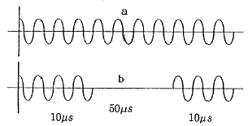
- 수혈
- 절단
- 지혈
- 누설
(정답률: 77%)
74. 혈압에 관한 설명으로 틀린 것은?
- 혈관저항이 클수록 혈압은 상승한다.
- 혈액의 점도가 높을수록 혈압이 상승한다.
- 혈관의 탄성이 떨어질수록 혈압이 상승한다.
- 심장으로부터 박출되는 혈류량이 증가할수록 혈압이 하강한다.
(정답률: 65%)
75. 인공심폐기의 구성 요소 중 저체온의 유도를 위해 사용되는 장치는?
- 여과기(filters)
- 산화기(oxygenator)
- 저혈조(blood reservoir)
- 열교환기(heat exchanger)
(정답률: 77%)
76. 인공호흡기의 호흡조절방식 중 대상자의 환기노력에 일치시키는 동시에 공기를 전달하는 방식은?
- 동시성 간헐적 강제환기
- 간헐적 강제환기
- 압력 보조 환기
- 조절환기
(정답률: 72%)
77. 인공관절에 사용되는 생체재료가 아닌 것은?
- 세라믹
- 폴리에틸렌
- 스테인리스 스틸
- 코발트 니켈 합금
(정답률: 45%)
78. 초음파를 이용한 뇌혈류진단기로 측정할 수 없는 생체 신호는?
- 심박동 계수
- 혈류 속도
- 혈중 산소 농도
- 저항 계수
(정답률: 62%)
79. 양자형 적외선 센서에 관한 설명 중 틀린 것은?
- 광전도 효과나 광기전력 효과에 의한 전압 또는 전류변화를 이용하는 방식이다.
- 수십 ms 정도로 응답속도나 느린 특성을 보인다.
- 작동 중 열의 발생으로 냉각이 필요한 특성을 가진다.
- 감도가 높으며 파장에 따른 감도변화가 크다.
(정답률: 63%)
80. MRI에서 고주파 발신과 생체로부터의 MR신호를 수신하기 위한 코일은?
- RF coil
- Shim coil
- Gradient coil
- Magnet coil
(정답률: 70%)
5과목: 의용기계공학
81. 보행과 주행의 차이점을 바르게 설명한 것은?
- 양하지지지기의 유무
- 분속수의 차이
- 속도의 차이
- 보폭의 차이
(정답률: 65%)
82. 건강한 성인의 혈액에 대한 설명으로 틀린 것은?
- 적혈구 때문에 비뉴턴유체이다.
- 점도는 생리식염수와 비슷하다.
- 비선형적인 점성특성을 나타낸다.
- 헤마토크릿에 따라 점도가 변화한다.
(정답률: 71%)
83. 물리적 에너지 중 직류 및 저주파 전류를 이용한 의공학 기술은?
- 인공관절
- 혈류계측
- 광전맥파
- 생체전기
(정답률: 67%)
84. 물체의 정적 평형(static equilibrium)에 관한 설명으로 틀린 것은?
- 물체가 양(+)의 가속도로 운동을 한다.
- 물체는 정지상태에 있거나 등속운동을 한다.
- 물체에 작용하는 모든 힘의 합은 “0(영)”이다.
- 물체에 작용하는 모든 모멘트의 합은 “0(영)”이다.
(정답률: 67%)
85. 합성고무 중 가장 탄성이 좋고 질긴 특성이 있으며, 생체 적합성과 탄성이 우수하고 표면 변화가 가능하며 인공심장 재료로 활용되는 고분자 재료는?
- 실리콘
- 콜라겐
- 폴리에스터
- 폴리우레탄
(정답률: 64%)
86. 생체 조직 중 인체의 정상적인 활동 중에 최대변형(%)이 가장 작은 것은?
- 동맥혈관
- 근육
- 힘줄
- 뼈
(정답률: 80%)
87. 점성계수의 단위 1P = 10-1N·(s/m2)일대 1cP는?
- 10-3 N/m2
- 10-1 N/m2
- 10-3 N·s/m2
- 10-1 N·s/m2
(정답률: 72%)
88. 80cm의 용수철에 200N의 하중이 작용하여 길이가 84cm가 되었다면 이때 변형률(ε)은?
- 0.1
- 0.01
- 1.1
- 0.⑤
(정답률: 66%)
89. 길이가 20.0mm 인 시편을 이용한 인장시험 결과는 28.8mm 지점에서 파단 되었다면 이 시편의 최종 길이 변화를 변위(Strain at brea; mm/mm)값으로 환산한 것은?
- 0.28
- 0.44
- 0.88
- 0.20
(정답률: 68%)
90. 체내에서 초음파에 의해 발생하는 캐비테이션 현상에 관한 설명 중 틀린 것은?
- 초음파의 에너지 밀도가 1W/cm2 이상이 되면 기포가 발생한다.
- 발생된 기포는 양압기에 큰 충격을 주어 조직을 파괴한다.
- 혈액 중의 작은 공기의 기포에 초음파가 조사되면 순간적으로 기포가 소멸된다.
- 초음파 메스는 캐비테이션 성질을 응용한 의료장비이다.
(정답률: 68%)
91. 나사의 리드(lead)에 대한 설명으로 옳은 것은?
- 나사선에서 나사선까지의 길이이다.
- 나사를 1회전했을 때 축 방향으로 이동하는 거리이다.
- 나사를 1회전했을 때 축 방향으로 이동하는 원둘레이다.
- 나사산의 단면 모양에서 나사산을 이루는 두 개의 빗변의 길이이다.
(정답률: 67%)
92. 용존 산소 농도 차이에 의해서 일어날 수 있는 금속 생체재료의 분해형태는?
- 틈새부식
- 합금부식
- 미생물 부식
- 이종금속 부식
(정답률: 58%)
93. 생체재료 삽입에 의하여 손상된 상처조직 주위에서 일어나는 염증반응의 진행 순서를 옳게 나열한 것은?
- 모세혈관 팽창 → 세포침투 → 피복형성 → 재형성 → 소멸
- 모세혈관 팽창 → 세포침투 → 재형성 → 피복형성 → 소멸
- 모세혈관 팽창 → 세포침투 → 추출 → 소멸 → 피복형성
- 모세혈관 팽창 → 세포침투 → 소멸 → 추출 → 피복형성
(정답률: 56%)
94. 자전하는 양자가 강한 외부자기장에 노출되었을 때 그 외부자기장을 중심으로 일정한 각을 유지하며 회전하는 현상을 무엇이라 하는가?
- 공명(Resonance)
- 세차운동(Precession)
- 자화(Magnetization)
- 자기모멘트(Magnetic moment)
(정답률: 70%)
95. 뛰어난 내식성, 생체친화성, 높은 내마모성과 높은 강도 등의 장점으로 인해 인공 고관절이나 치과용 임플란트 등의 광범위하게 임상에서 사용되는 재료는?
- Graphite
- Alumina
- Silica
- Zirconia
(정답률: 66%)
96. 생체재료로 사용하는 물질 중 탄성계수가 가장 작은 것은?
- 활액(synovial fluid)
- 스테인리스강(stainless steel)
- 알루미늄(aluminium)
- 열분해 탄소(pyrolytic carbon)
(정답률: 54%)
97. 다음 중 초음파의 전파속도가 가장 느린 것은?
- 물
- 공기
- 지방
- 두개골
(정답률: 65%)
98. 다음 중 보조기를 착용하는 목적으로 틀린 것은?
- 체중의 지지
- 병변의 치료
- 병변 조직의 보호 및 치유의 촉진
- 불수의 운동, 상실된 기능의 대상 또는 보조
(정답률: 68%)
99. 생체 조직의 도전율의 설명으로 틀린 것은?
- 골격근의 도전율은 이방성을 나타낸다.
- 주파수의 증가와 함께 도전율을 감소한다.
- 혈액의 도전율은 지방의 도전율에 비하여 현저하게 크다.
- 골격근의 도전율은 혈액의 도전율에 비하여 현저하게 작다.
(정답률: 57%)
100. 상지보조기의 기능 및 목적과 거리가 먼 것은?
- 체중을 지탱하기 위하여
- 약한 근력을 보호하기 위하여
- 관절의 각도를 일정하게 유지하기 위하여
- 동통 부위를 보호하거나 기형 예방을 위하여
(정답률: 71%)